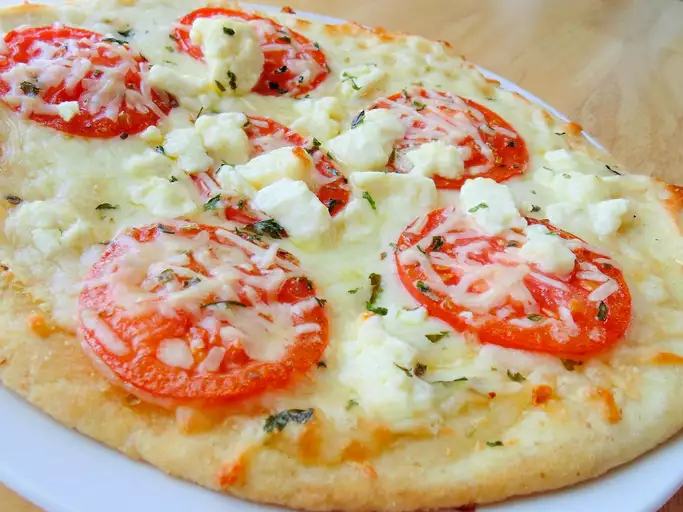

Stir together olive oil, garlic, and salt; toss with tomatoes,
and allow to stand for 15 minutes. Preheat oven
to 400 degrees F (200 degrees C).
Brush each pizza crust with some of the tomato marinade.
Sprinkle the pizzas evenly with Mozzarella and Fontina cheeses.
Arrange tomatoes overtop, then sprinkle with shredded basil, Parmesan, and feta cheese.
Bake in preheated oven until the cheese is bubbly and golden brown, about 10 minutes.